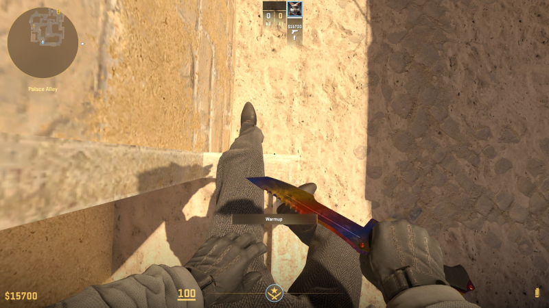
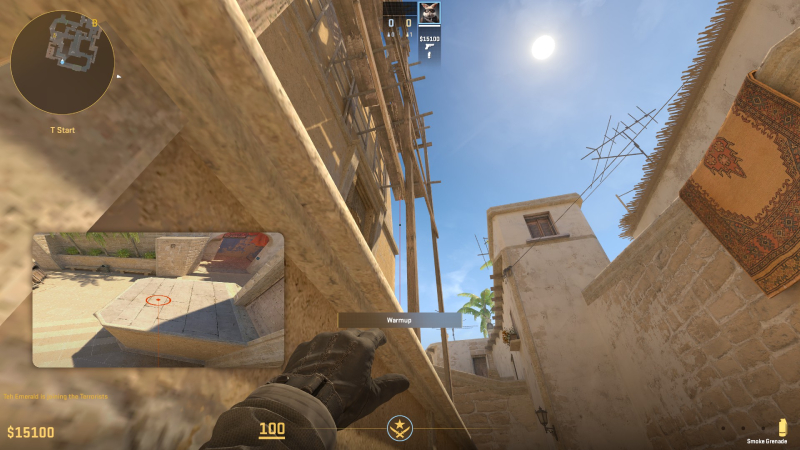
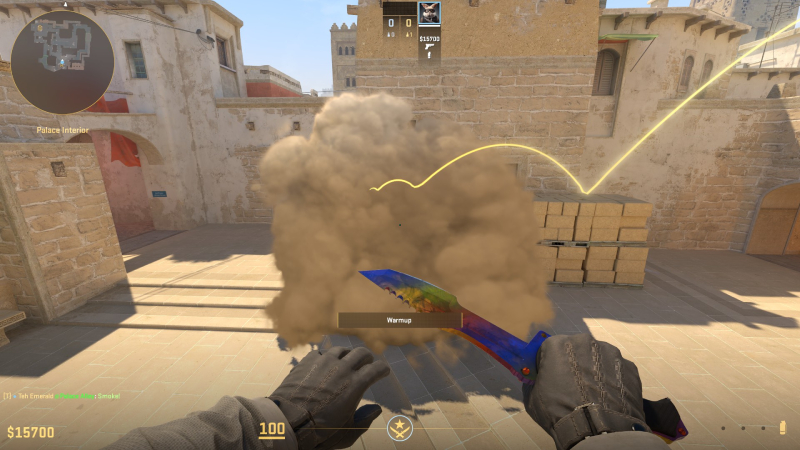

Реальні скриншоти лайн-апуReal lineup screenshotsCapturas reales del lineup真实投掷点位截图असली लाइनअप स्क्रीनशॉटCaptures réelles du line-upCapturas reais do lineupلقطات حقيقية للتشكيلةআসল লাইনআপের স্ক্রিনশটTangkapan layar lineup asli
Зображення показують старт, напрямок прицілу та/або результат кидка.Images show the starting position, aim point, and/or throw result.Las imágenes muestran la posición inicial, el punto de mira y/o el resultado del lanzamiento.图片展示起始位置、瞄准点和/或投掷结果。तस्वीरों में शुरुआती जगह, निशाना और/या थ्रो का नतीजा दिखता है।Les images montrent le point de départ, la visée et/ou le résultat du lancer.As imagens mostram a posição inicial, a mira e/ou o resultado do arremesso.تعرض الصور موقع البداية ونقطة التصويب و/أو نتيجة الرمية.ছবিতে শুরুর অবস্থান, লক্ষ্যবিন্দু এবং/অথবা নিক্ষেপের ফল দেখানো হয়েছে।Gambar menunjukkan posisi awal, titik bidik, dan/atau hasil lemparan.



Як виконати
- Піднімися на першу платформу над A Ramp і стань біля деревʼяної опори.
- Наведи приціл у небо зліва від конструкції, як на скриншоті.
- Зроби звичайний лівий кидок без стрибка.
- Перед виходом переконайся, що Stairs перекриті.